Certification Tracking
Track progress across BLS, ACLS, PALS and other EMS certification modules with clear completion indicators.
A comprehensive learning platform that simplifies complex EMS protocols and empowers emergency medical professionals through interactive learning and certification.


EMS Explained was redesigned to make paramedic certification preparation easier to navigate, study, and return to, bringing certification progress, clinical references, practice questions, and study resources into one clearer and more consistent interface.
EMS Explained is an exam-preparation application built for healthcare providers pursuing EMS certifications EMRs, EMTs, Paramedics, and related levels (BLS, ACLS, PALS). Instead of dense, hard-to-scan reference material and inconsistent progress tracking, users get a unified app for certification modules, daily study tools, and clinical topic references.
Throughout this project, I focused on improving the user experience by auditing the existing UI, identifying usability and visual hierarchy issues, and restructuring the experience to make important information easier to find and understand. The redesign introduces clearer navigation, organized content sections, visual progress tracking, structured clinical references, and a more focused quiz experience.
Freelance / Client Project
3 years and 2 months
UI/UX Designer
Track progress across BLS, ACLS, PALS and other EMS certification modules with clear completion indicators.
View ongoing, pending, and completed study topics through organized progress cards and visual completion indicators.
Browse diseases, medications, classifications, mechanisms of action, dosage, indications, and other clinical information through structured sections.
Practice with scenario-based questions and receive clear answer feedback with rationales for both correct and incorrect responses.
Through an audit of the existing EMS Explained app, I identified several areas where the interface made studying and reviewing clinical information more difficult than necessary. The redesign focused on reducing visual clutter, improving information hierarchy, and making progress and study materials easier to navigate.
The original EMS Explained app contained a large amount of valuable study material, but the experience could feel dense and difficult to scan, especially when moving between certification topics, clinical references, and practice questions.
Clinical information was often presented as long blocks of text and lists, making important information harder to scan during quick study sessions.
The original interface provided limited visual feedback about completed topics and ongoing certification progress, making it harder to understand what had already been studied.
Different sections used varying layouts, controls, and visual treatments, which made the overall experience feel less cohesive and required users to adjust to each screen.
Diseases and medication information contained multiple details that could become overwhelming when presented together without clear grouping or expandable sections.
The redesign focuses on creating a more structured and consistent learning experience, allowing users to quickly find study materials, understand their progress, and review clinical information with less friction.
Information was reorganized into cards, numbered sections, tabs, and expandable areas so users can focus on one topic at a time without being overwhelmed.
Certification modules now use consistent progress indicators, completion percentages, and Resume/Review actions to make study status easier to understand at a glance.
A unified bottom navigation system and recurring interaction patterns make it easier to move between certifications, diseases, medications, guides, and other learning resources.
Questions, answer choices, correct answers, and rationales were separated into clear sections, making it easier for users to understand not only what the answer is, but why it is correct or incorrect.
Every design decision from navigation structure and typography to spacing, cards, progress indicators, and content hierarchy was focused on reducing cognitive load and helping users find and understand important clinical information more efficiently.
Before redesigning EMS Explained, I reviewed the existing application to understand how its content, navigation, and visual elements were structured. The goal was to identify areas where the interface could be clearer, more consistent, and easier to navigate while preserving the core functionality of the original app. Rather than changing the application's purpose, the redesign focused on improving how users access, scan, and interact with the existing learning materials.
Reviewed the entire application screen by screen to evaluate content presentation, navigation structure, visual hierarchy, and interaction patterns.
Analyzed how clinical information, medications, and quiz rationales are written, grouped, and presented to identify opportunities for clearer hierarchy.
Evaluated how users move between major sections and screens to identify friction points and opportunities for a more intuitive flow.
Assessed typography, color usage, spacing, components, and feedback patterns to identify inconsistencies and areas for improving usability and readability.
Key findings from the existing app and the opportunities that shaped the direction of the redesign.
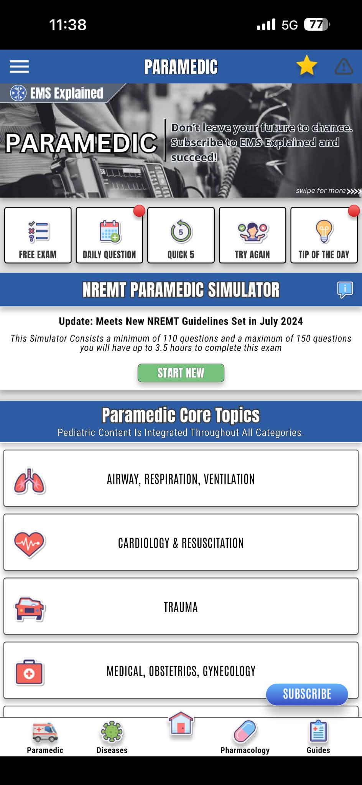
The home screen is visually cluttered with multiple elements competing for attention and inconsistent navigation.
Create a cleaner dashboard with clear navigation and quick access to core study areas and progress tracking.
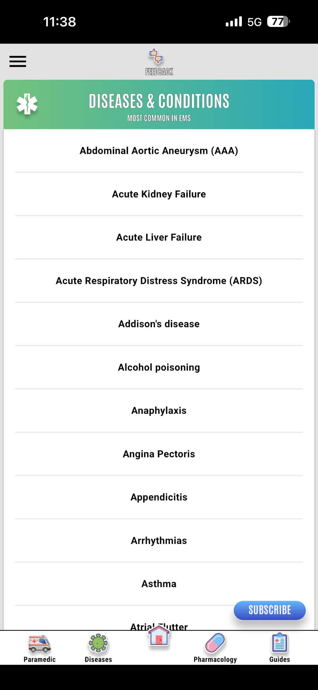
Simple text list with minimal visual cues makes it harder to scan and locate information quickly.
Use categorized cards, search, and visual hierarchy to make browsing and finding topics easier.
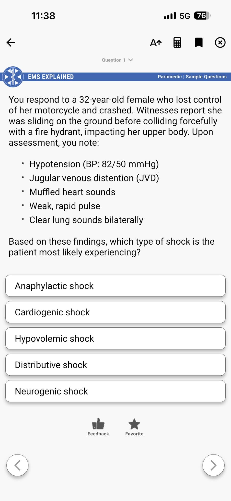
The question and answers feel plain and text-heavy, with limited visual hierarchy and feedback.
Improve readability, highlight key information, and use clearer answer states and interactions.
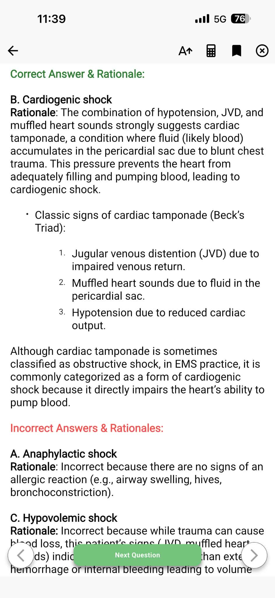
Rationale content is long and dense, making it difficult to scan the key reasons and differences.
Break rationale into clear sections for correct and incorrect answers with better visual hierarchy.
The audit revealed several patterns that guided the redesign direction.
These findings became the foundation for the redesign, ensuring that every design decision addresses real usability issues and improves the overall learning experience.
The redesign process focused on understanding the existing EMS Explained application, identifying areas for improvement, and translating those findings into a cleaner and more consistent interface. Each stage built on the previous one, from the initial UI audit to the final high-fidelity screens.
I began by reviewing the existing EMS Explained interface screen by screen. I looked at how information was presented, how users moved between sections, and where visual hierarchy, spacing, and consistency could be improved.
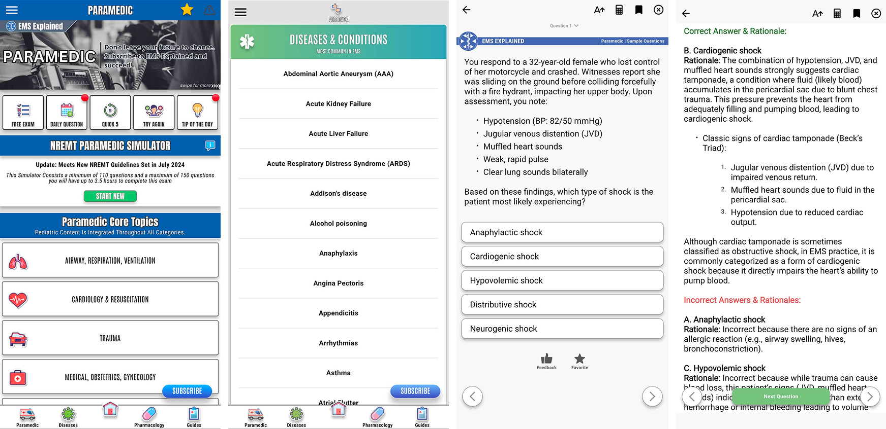
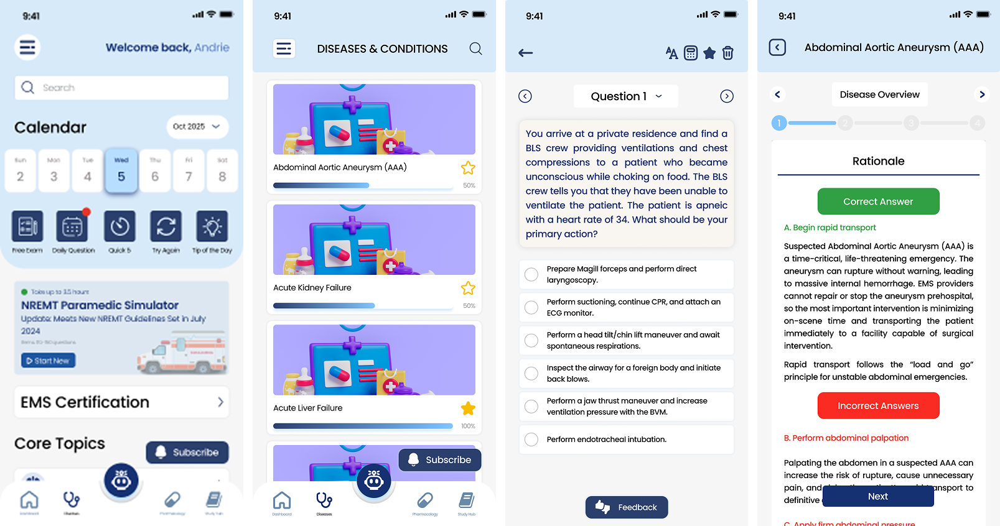
After reviewing the existing interface, I reorganized the main content areas around the way users would access study materials. The goal was to create a clearer structure for certifications, diseases, medications, guides, and quizzes without changing the application's core purpose.
Once the structure was established, I developed a visual direction that would make the application feel more cohesive and easier to scan. Reusable patterns were applied across the different sections to create consistency between screens.
Aa
Poppins
SemiBold / Medium / Regular
The final stage was translating the structure and visual direction into high-fidelity screens. I refined the layouts across the major areas of the application to ensure that the new design remained consistent while supporting different types of learning content.
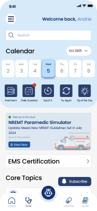
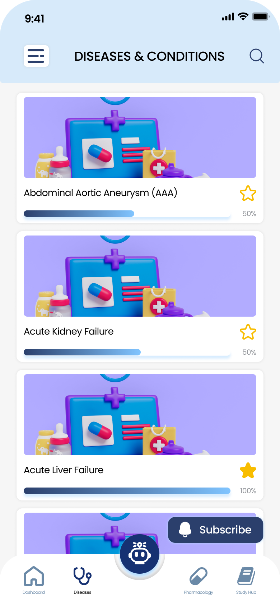
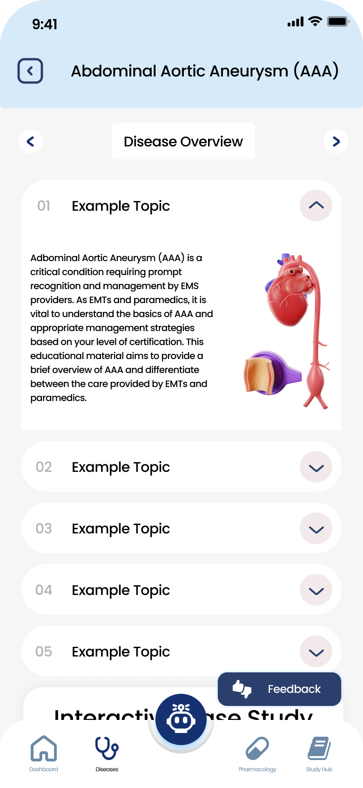
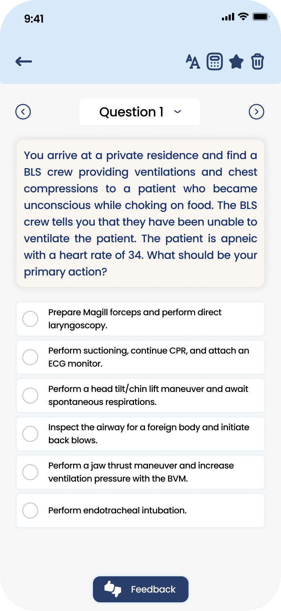
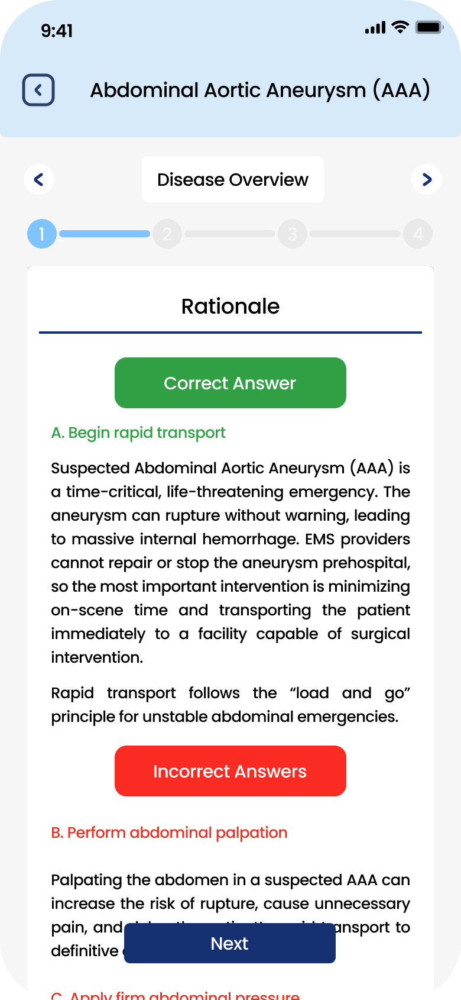
The redesign moved from understanding the existing product to restructuring and visually refining the experience.
Reviewed the original application and identified usability and visual inconsistencies.
Organized content and established a clearer navigation structure.
Defined typography, colors, spacing, components, and interaction patterns.
Applied the new system across the major EMS Explained screens and refined the overall experience.
After auditing the original EMS Explained application and refining its information structure, the final interface focused on clarity, consistency, readability, and efficient access to study materials. The redesign brings certification tracking, clinical references, medications, guides, and interactive quizzes into a more cohesive learning experience.
The redesigned dashboard provides a central starting point for EMS learners, bringing quick access to certifications, core topics, simulator updates, tools, and study resources. Clear sections and visual hierarchy help users quickly understand what to study and where to continue.
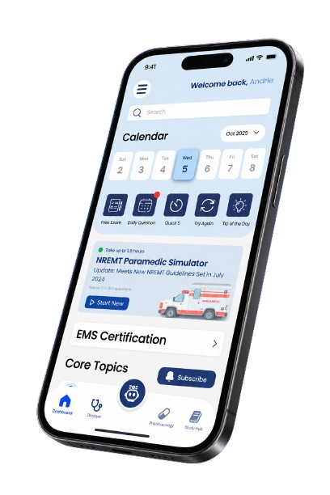
Track your progress across BLS, ACLS, PALS and other modules with clear topic progress and resume options.
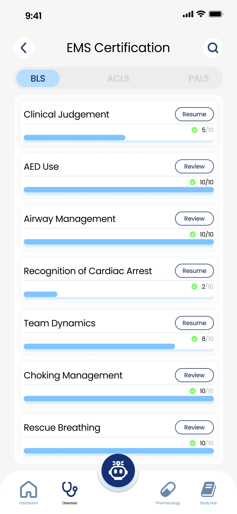
Browse and search diseases quickly with a clean list and simple navigation.
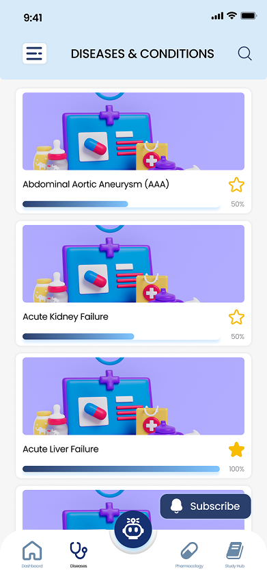
Detailed disease information is organized into expandable sections for easier reading and faster study.
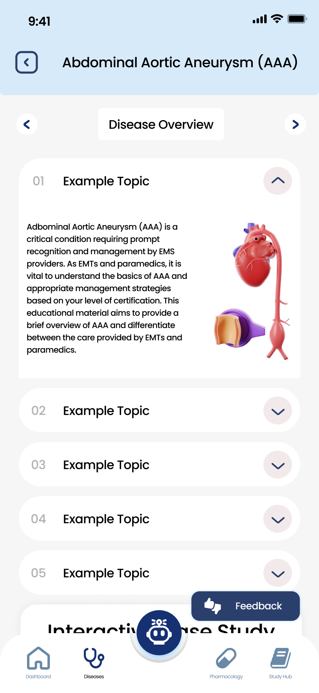
Answer scenario-based questions in a focused environment with clear options and easy navigation.
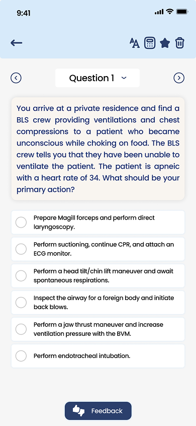
Review the correct answer and detailed rationale. Incorrect answers also show why they are not the best choice.
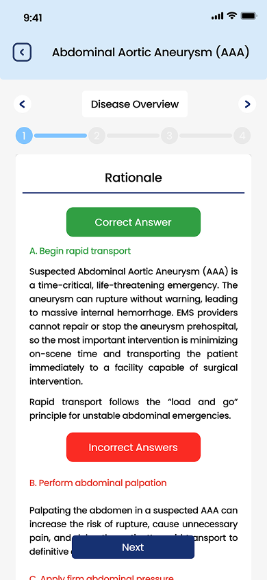
Track completed and pending topics at a glance, with per-topic progress rings and quick resume access for each module.
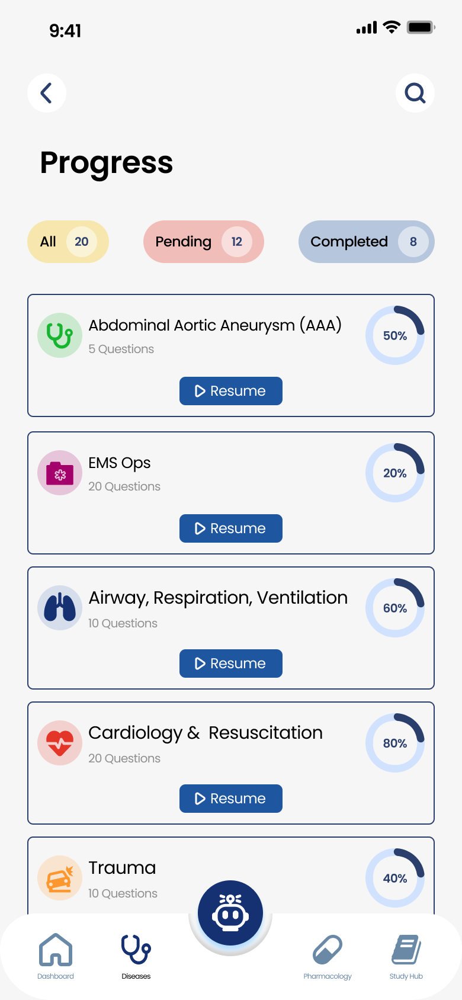
Content is organized into distinct sections, cards, tabs, and expandable areas so important information is easy to scan and understand.
Certification and topic progress are shown through progress bars, counts, and completion states for a quick overview of study status.
A unified visual system across all screens creates a predictable and cohesive experience throughout the app.
Redesigning EMS Explained strengthened my understanding of how thoughtful UI decisions can improve an existing digital experience. Working with an established application challenged me to look beyond visual changes and consider how information, navigation, and interactions could be structured more clearly.
Throughout this project, I learned how important information hierarchy, consistency, and simplicity are when designing an application with a large amount of technical content. Reviewing the original interface helped me understand how small improvements in spacing, grouping, navigation, and visual feedback can make complex information easier to scan and understand.
Most importantly, this project taught me that a successful redesign is not about changing everything. It is about identifying what already works, recognizing where the experience can be improved, and making intentional design decisions that solve those problems while preserving the product's core purpose.